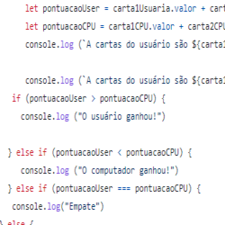

Projeto BlackJack
O projeto consitia em criar jogo BlackJack também conhecido como "21", através de um Código em Java Script
- Existem 2 jogadores: o usuário e o computador.
- Os jogadores usam um baralho com muitas cartas. As cartas têm um número (A, 2, 3, 4, 5, 6, 7, 8, 9, 10, J , Q, K) e um naipe (Copas (♥️), Paus (♣️), Ouros(♦️) e Espadas(♠️)). Por exemplo, uma carta do baralho é o dois de Paus (2♣️). Existem 52 possibilidades de cartas diferentes (13 números e 4 naipes).
- Os jogadores compram cartas do baralho. Ao comprar uma carta do baralho, ela pode ser de qualquer uma das 52 cartas, com probabilidade igual.- As cartas tem um valor de acordo com seu número (a carta 4♣️ tem valor 4, e a carta 9♦️ tem valor 9). As cartas J, Q e K tem valor 10, e a carta A tem valor 11.
- O jogo inicia com cada jogador (usuário e computador) recebendo 2 cartas. A pontuação de cada jogador é a soma do valor das suas cartas.
- O jogador com a maior pontuação ganha a rodada.
